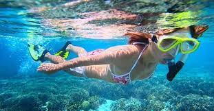

Activities

Snorkeling
Explore the vibrant underwater world of Bantayan Island with our snorkeling tours. Dive into crystal-clear waters and discover colorful coral reefs teeming with marine life.

Island Hopping
Discover hidden gems and secluded beaches with our island hopping adventures. Visit neighboring islands, swim in turquoise lagoons, and relax on pristine white sandy beaches.

Trekking
Embark on scenic trekking trails through lush tropical forests and picturesque landscapes. Experience the beauty of Bantayan Island from a different perspective and encounter native wildlife along the way.